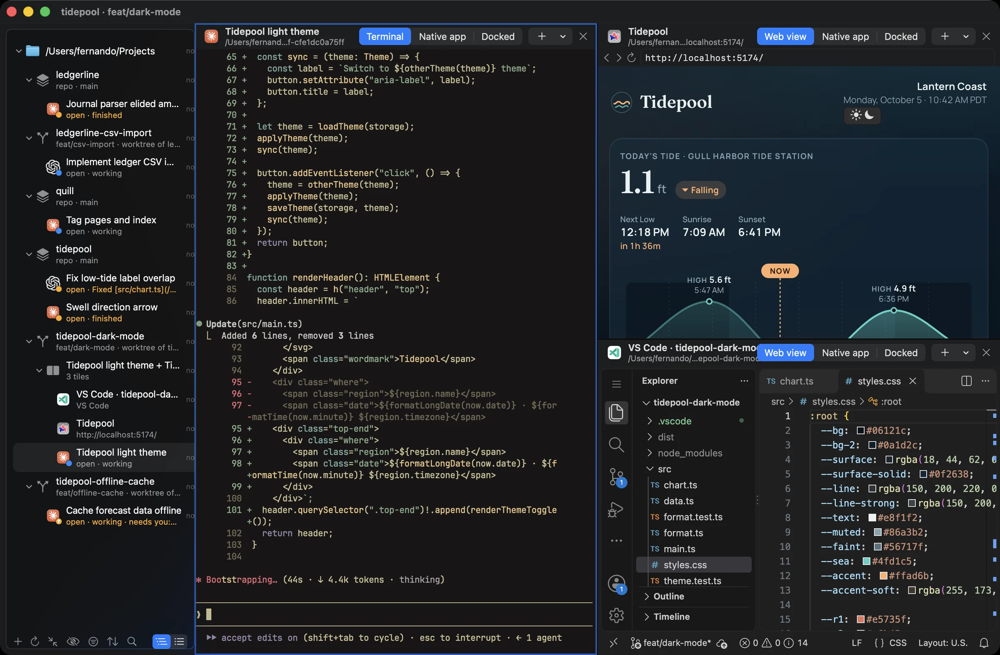
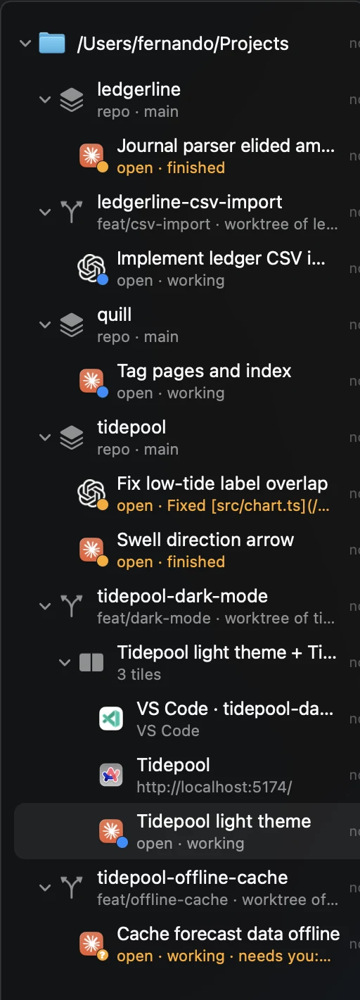
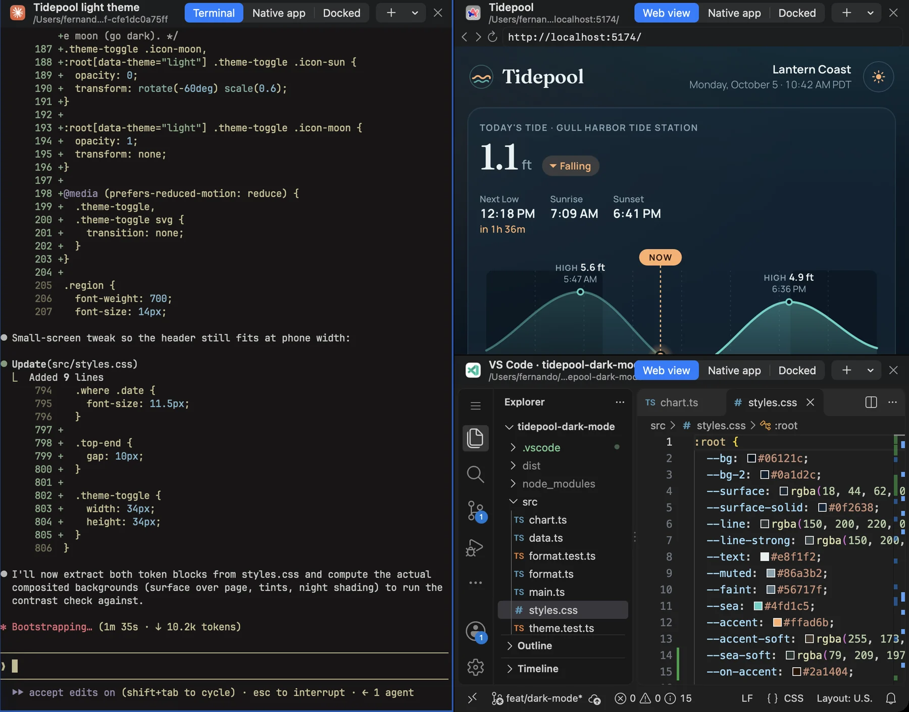
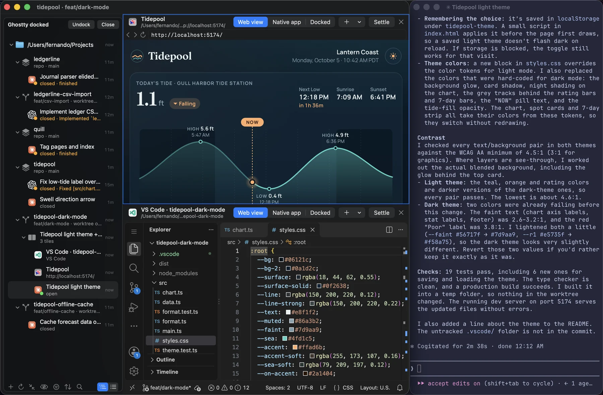

Not Another Agent Manager
Most of them are barking up the wrong layer. Don't reinvent my tools. No more chat wrappers. This is Noaam.

What it does
Every tool gets one dot: working, waiting on you, finished while you were elsewhere, or crashed.
Sessions from your coding agent, editor windows, websites and terminals land under the repo or worktree they belong to. Nothing to import. Right-click any folder to branch a new worktree there.

Drag an item onto the edge of a pane to split it. The agent, the page it's building and your editor sit side by side, and the layout is saved.

Any item opens in its own app with one click. Or dock that app's window next to the sidebar, or into a tile of a Space, and it moves with Noaam.

Profiles keep work and side projects apart: their own folders, tools and web sign-ins. Each runs as its own Noaam, side by side in ⌘-Tab.
And also
~/.config/noaam. Delete Noaam and your sessions, worktrees and files are exactly where they were.* Except ⌘Q, ⌘W, ⌘, (Settings), ⌘H and ⌘M, which always go to Noaam, and any ⌃⌘ shortcut a tool of yours also uses.
Works with
Get it
Questions
Half of them want to replace my tools. A new terminal. A new multiplexer. An editor with a chat box glued to the side. No. I'm not learning your AI slop terminal multiplexer. When I read or edit code, I use VS Code/Neovim/Zed/<insert your tool>. When I talk to a coding agent, I use Claude Code/Codex/Pi/<insert your tool>. My tools are fine.
The other half wrap my agents. Yet another web UI that reinvents the chat window and shells out to my coding CLI behind the curtain. Now every new feature reaches me whenever some solo vibe coder gets around to supporting it. No thanks. I want the real thing, today's version. My tools are fine.
Keeping track of it all. I work in a repo, a worktree, some random folder. By lunch that folder has eleven agent sessions on it, three browser tabs and an editor window, and nothing on my machine knows they belong together. Which session is waiting on me? Which tab was for which task? Where the heck was I yesterday?
Noaam is only that layer.
AI has the experience of an intern on day one. You're still responsible for knowing what you're building.
That's why your editor sits next to your agents, not behind a chat box.
No. No account, no server, no telemetry. Your agents talk to whoever they already talk to.
No. They run exactly where they always do, on your Mac, with your subscription. Noaam just keeps track.
No. Noaam doesn't call any model.
Not yet. Maybe if enough people buy me a coffee.
Free. If it saves you time, sponsor me a coffee.
It isn't notarized yet. Here's the one-time fix.